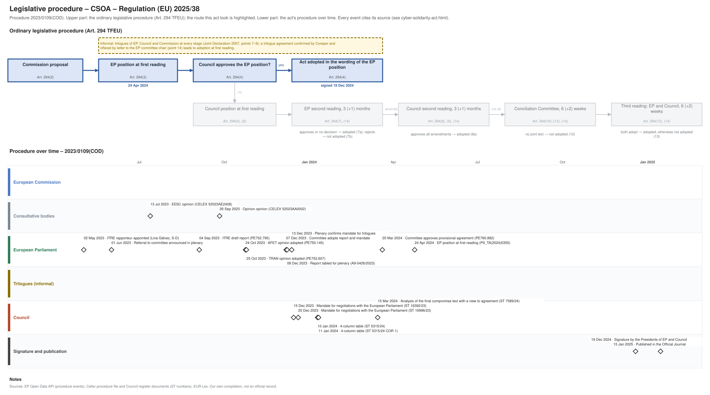

← All procedures · Regulation timeline
Procedure 2023/0109(COD), completed. Drawing: SVG · PNG · PDF (A3) · draw.io

| Date | Actor | Event | Document | Source |
|---|---|---|---|---|
| 2023-05-02 | European Parliament | ITRE rapporteur appointed (Lina Gálvez, S-D) | EP Open Data API, procedure 2023-0109 (participation RAPPORTEUR) | |
| 2023-06-01 | European Parliament | Referral to committee announced in plenary | EP Open Data API, procedure 2023-0109 (REFERRAL) | |
| 2023-07-13 | Consultative bodies | EESC opinion | CELEX 52023AE2408 | Cellar procedure file 2023/109 |
| 2023-09-04 | European Parliament | ITRE draft report | PE752.795 | EP Open Data API, procedure 2023-0109 (COMMITTEE_TABLING_REPORT) |
| 2023-09-26 | Consultative bodies | Opinion opinion | CELEX 52023AA0002 | Cellar procedure file 2023/109 |
| 2023-10-24 | European Parliament | AFET opinion adopted | PE750.145 | EP Open Data API, procedure 2023-0109 (COMMITTEE_ADOPTING_OPINION) |
| 2023-10-25 | European Parliament | TRAN opinion adopted | PE752.607 | EP Open Data API, procedure 2023-0109 (COMMITTEE_ADOPTING_OPINION) |
| 2023-12-07 | European Parliament | Committee adopts report and mandate | EP Open Data API, procedure 2023-0109 (COMMITTEE_ADOPTING_REPORT) | |
| 2023-12-08 | European Parliament | Report tabled for plenary | A9-0426/2023 | EP Open Data API, procedure 2023-0109 (TABLING_PLENARY) |
| 2023-12-13 | European Parliament | Plenary confirms mandate for trilogues | EP Open Data API, procedure 2023-0109 (PLENARY_ENDORSE_COMMITTEE_INTERINSTITUTIONAL_NEGOTIATIONS) | |
| 2023-12-15 | Council | Mandate for negotiations with the European Parliament | ST 16392/23 | Cellar procedure file 2023/109 (Council register) |
| 2023-12-20 | Council | Mandate for negotiations with the European Parliament | ST 16996/23 | Cellar procedure file 2023/109 (Council register) |
| 2024-01-10 | Council | 4-column table | ST 5315/24 | Cellar procedure file 2023/109 (Council register) |
| 2024-01-11 | Council | 4-column table | ST 5315/24 COR 1 | Cellar procedure file 2023/109 (Council register) |
| 2024-03-15 | Council | Analysis of the final compromise text with a view to agreement | ST 7589/24 | Cellar procedure file 2023/109 (Council register) |
| 2024-03-20 | European Parliament | Committee approves provisional agreement | PE760.882 | EP Open Data API, procedure 2023-0109 (COMMITTEE_APPROVE_PROVISIONAL_AGREEMENT) |
| 2024-04-24 | European Parliament | EP position at first reading (Art. 294(3) TFEU) | P9_TA(2024)0355 | EP Open Data API, procedure 2023-0109 (PLENARY_AMEND_PROPOSAL) |
| 2024-12-19 | Signature and publication | Signature by the Presidents of EP and Council | EP Open Data API, procedure 2023-0109 (SIGNATURE) | |
| 2025-01-15 | Signature and publication | Published in the Official Journal | EP Open Data API, procedure 2023-0109 (PUBLICATION_OFFICIAL_JOURNAL) |
| Date | Document | Kind | Subject |
|---|---|---|---|
| 2023-07-13 | CELEX 52023AE2408 | opinion | Opinion of the European Economic and Social Committee on ‘Proposal for a Regulation of the European Parliament and of the Council amending Regulation (EU) … |
| 2023-07-17 | PE750.145 | ep-draft-opinion | DRAFT OPINION on the proposal for a regulation of the European Parliament and of the Council laying down measures to strengthen solidarity and capacities in … |
| 2023-07-24 | PE752.607 | ep-draft-opinion | DRAFT OPINION on the proposal for a regulation of the European Parliament and of the Council on Measures to strengthen solidarity and capacities in the Union … |
| 2023-09-04 | PE752.795 | ep-draft-report | DRAFT REPORT on the proposal for a regulation of the European Parliament and of the Council laying down measures to strengthen solidarity and capacities in the … |
| 2023-09-26 | CELEX 52023AA0002 | opinion | Opinion 02/2023 (pursuant to Article 322(1), TFEU) concerning the proposal for a Regulation of the European Parliament and of the Council laying down measures … |
| 2023-10-25 | PE752.607 | ep-opinion | OPINION on the proposal for a regulation of the European Parliament and of the Council on Measures to strengthen solidarity and capacities in the Union to … |
| 2023-10-27 | PE750.145 | ep-opinion | OPINION on the proposal for a regulation of the European Parliament and of the Council laying down measures to strengthen solidarity and capacities in the … |
| 2023-12-08 | A9-0426/2023 | ep-report | REPORT on the proposal for a regulation of the European Parliament and of the Council laying down measures to strengthen solidarity and capacities in the Union … |
| 2023-12-15 | ST 16392/23 | council-position | Mandate for negotiations with the European Parliament |
| 2023-12-20 | ST 16996/23 | council-position | Mandate for negotiations with the European Parliament |
| 2024-01-10 | ST 5315/24 | trilogue | 4-column table |
| 2024-01-11 | ST 5315/24 COR 1 | trilogue | 4-column table |
| 2024-03-15 | ST 7589/24 | agreed-text | Analysis of the final compromise text with a view to agreement |
| 2024-03-21 | PE760.882 | agreed-text | PROVISIONAL AGREEMENT RESULTING FROM INTERINSTITUTIONAL NEGOTIATIONS Proposal for a regulation laying down measures to strengthen solidarity and capacities in … |
| 2024-04-24 | P9_TA(2024)0355 | ep-position | Cyber Solidarity Act |
{kind=link}
{kind=link}